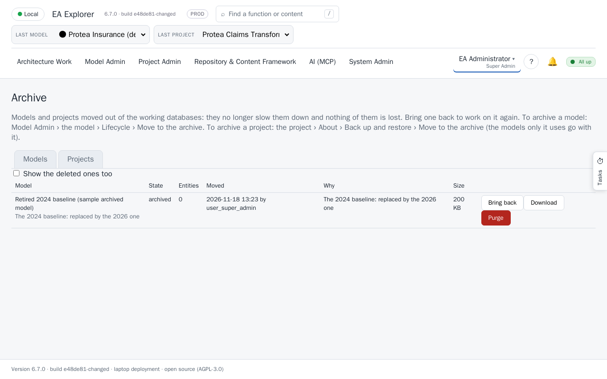

Move a model to the archive database
For: Model Admin
Take a model out of the working database, whole with its history; its admins can bring it back.

#/archiveWhy do this
Old models slow nothing much, but they clutter lists and backups. Moving one to the archive database keeps it with its history, out of everyday work, and its admins can bring it back.
A model's life has stages: started, worked on, copied or split, handed over, locked or frozen at key moments, archived when done. Each stage has its wizard, and each asks before it changes anything.
In TOGAF terms: The Architecture Landscape in the Architecture Repository: the models at strategic, segment, capability and transition levels. See EA Explorer and the TOGAF Standard.
The goal: A model is out of the working database but kept whole.
Before you start You need the Model Admin role on the model.
Steps
- Open Model Admin › Wizards on the model and choose Move to the archive.
- Read what refers to it: a model another derives from, or a project uses, cannot move.
- Type its name to confirm.
- To bring it back: Model Admin › Archive.